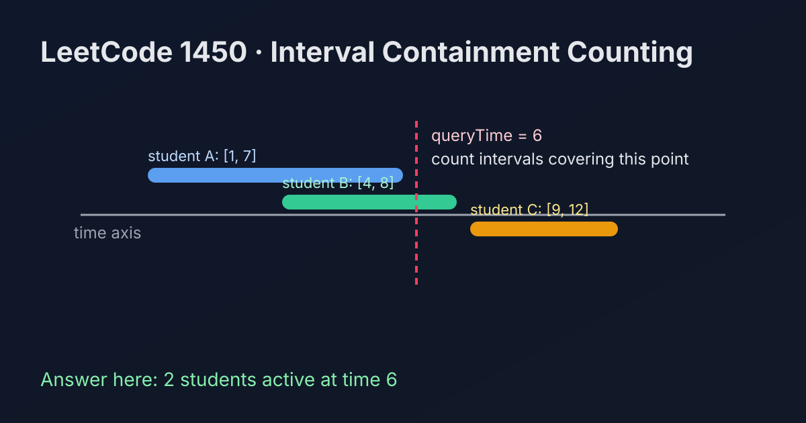

LeetCode 1450: Number of Students Doing Homework at a Given Time (Interval Containment Counting)
LeetCode 1450ArraySimulationToday we solve LeetCode 1450 - Number of Students Doing Homework at a Given Time.
Source: https://leetcode.com/problems/number-of-students-doing-homework-at-a-given-time/

English
Problem Summary
Given startTime[i] and endTime[i] for each student, count how many students are doing homework at queryTime. A student is active when startTime[i] <= queryTime <= endTime[i].
Key Insight
Each student contributes independently. We only need one linear scan and count intervals that contain the query point. No sorting or prefix structure is required.
Algorithm
- Initialize count = 0.
- For each index i, test startTime[i] <= queryTime && queryTime <= endTime[i].
- If true, increment count.
- Return count.
Complexity Analysis
Let n be number of students.
Time: O(n).
Space: O(1).
Common Pitfalls
- Using strict inequalities and accidentally excluding boundaries.
- Assuming arrays might have different lengths (problem guarantees aligned indices).
- Overengineering with sorting for a single query.
Reference Implementations (Java / Go / C++ / Python / JavaScript)
class Solution {
public int busyStudent(int[] startTime, int[] endTime, int queryTime) {
int count = 0;
for (int i = 0; i < startTime.length; i++) {
if (startTime[i] <= queryTime && queryTime <= endTime[i]) {
count++;
}
}
return count;
}
}func busyStudent(startTime []int, endTime []int, queryTime int) int {
count := 0
for i := 0; i < len(startTime); i++ {
if startTime[i] <= queryTime && queryTime <= endTime[i] {
count++
}
}
return count
}class Solution {
public:
int busyStudent(vector<int>& startTime, vector<int>& endTime, int queryTime) {
int count = 0;
for (int i = 0; i < (int)startTime.size(); ++i) {
if (startTime[i] <= queryTime && queryTime <= endTime[i]) {
++count;
}
}
return count;
}
};class Solution:
def busyStudent(self, startTime: List[int], endTime: List[int], queryTime: int) -> int:
count = 0
for s, e in zip(startTime, endTime):
if s <= queryTime <= e:
count += 1
return countvar busyStudent = function(startTime, endTime, queryTime) {
let count = 0;
for (let i = 0; i < startTime.length; i++) {
if (startTime[i] <= queryTime && queryTime <= endTime[i]) {
count++;
}
}
return count;
};中文
题目概述
给定每位学生的开始时间 startTime[i] 与结束时间 endTime[i]，统计在 queryTime 时刻正在写作业的学生人数。判定条件是 startTime[i] <= queryTime <= endTime[i]。
核心思路
每个学生是否“在线”彼此独立，直接线性扫描即可。只要区间包含查询时间就计数，不需要排序、差分或前缀和。
算法步骤
- 初始化计数器 count = 0。
- 遍历所有下标 i，判断 startTime[i] <= queryTime && queryTime <= endTime[i]。
- 条件成立则 count++。
- 遍历结束返回 count。
复杂度分析
设学生人数为 n。
时间复杂度：O(n)。
空间复杂度：O(1)。
常见陷阱
- 把边界写成严格不等号，导致漏算刚好在开始/结束时刻的学生。
- 忽略题目给定的等长数组约束并做了不必要防御。
- 单次查询却引入排序等复杂结构，增加实现成本。
多语言参考实现（Java / Go / C++ / Python / JavaScript）
class Solution {
public int busyStudent(int[] startTime, int[] endTime, int queryTime) {
int count = 0;
for (int i = 0; i < startTime.length; i++) {
if (startTime[i] <= queryTime && queryTime <= endTime[i]) {
count++;
}
}
return count;
}
}func busyStudent(startTime []int, endTime []int, queryTime int) int {
count := 0
for i := 0; i < len(startTime); i++ {
if startTime[i] <= queryTime && queryTime <= endTime[i] {
count++
}
}
return count
}class Solution {
public:
int busyStudent(vector<int>& startTime, vector<int>& endTime, int queryTime) {
int count = 0;
for (int i = 0; i < (int)startTime.size(); ++i) {
if (startTime[i] <= queryTime && queryTime <= endTime[i]) {
++count;
}
}
return count;
}
};class Solution:
def busyStudent(self, startTime: List[int], endTime: List[int], queryTime: int) -> int:
count = 0
for s, e in zip(startTime, endTime):
if s <= queryTime <= e:
count += 1
return countvar busyStudent = function(startTime, endTime, queryTime) {
let count = 0;
for (let i = 0; i < startTime.length; i++) {
if (startTime[i] <= queryTime && queryTime <= endTime[i]) {
count++;
}
}
return count;
};
Comments